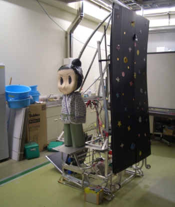

マシン名：Star Festivel

09年度に製作したマシンです。
東北大会では1回戦で優勝した鶴岡高専と対戦し、
残念ながら1回戦で予選敗退しました。
昨年から改良を加えたチェビシェフリンクにより、さらに安定した4足歩行を実現。
後部にある台に織姫を乗せ、
およそ3mのアルミ材を自作ベンダで曲げて作ったレール上を
恐ろしい容量のスーパーキャパシタから電力を得て射出する。
前面の黒い板は「天の川」を表現し、ローリングジャンプの射出時にフィールド上に広げて
傷をつけないようにする。
スライダクランク機構による安定した歩行。
足裏にある回転板で方向を変えることができるため、
シンクロスピンやポールターンに挑戦出来る。
なぜ「うさ耳」なのかというと、アームを昇降させるための
巻き取りリールのための梁が隠れているため。
現在はイベント用にサンタのコスプレをした状態で
静かに展示されている（期間限定）。